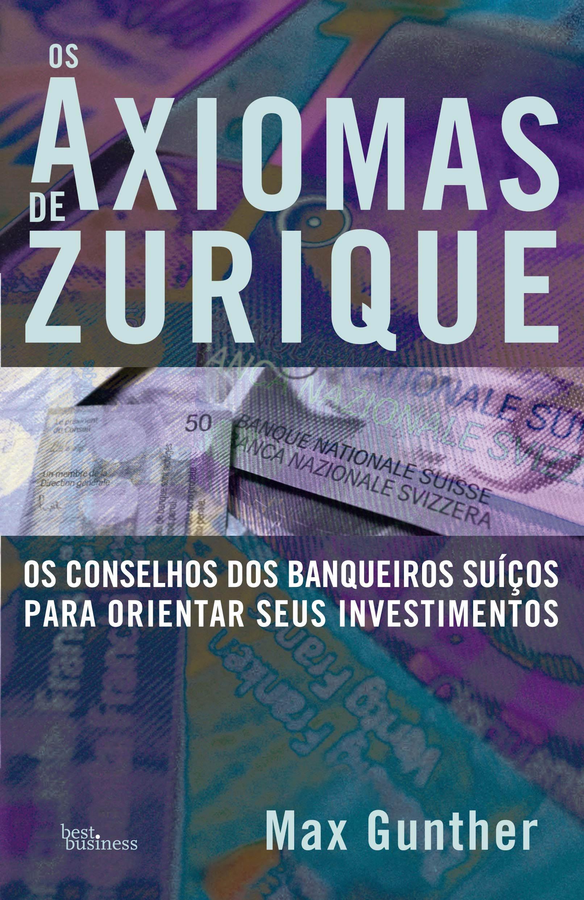
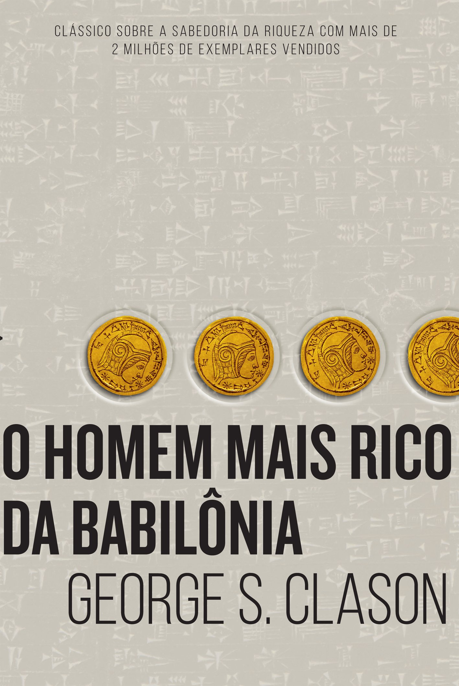

Livros para Investimentos
Os Segredos da Mente Milionária
 |
Neste sucesso de vendas, o autor T. Harv Eker, ensina importantes lições, como o que há de errado com a mentalidade da maioria das pessoas sobre o dinheiro e como mudar essa realidade. Assim, trouxemos a resenha desta obra para inspirá-lo a ir atrás dos seus objetivos! O livro traz aplicação prática desses arquivos e é crucial para quem quer aprender mais sobre a mentalidade das pessoas ricas. Ademais, o próprio autor frisa que ser rico não é uma questão de nível de educação, inteligência, talento, oportunidades, métodos de trabalho, contatos ou sorte. |
Os Axiomas de Zurique
|  | O livro Os Axiomas de Zurique escrito por Max Gunther, é constituído de 12 (doze) axiomas principais mais 16 (dezesseis) secundários, que pretendem trazer resposta às dúvidas com as quais o especulador pode se deparar. O título refere-se às táticas usadas pelos banqueiros suíços para obter êxito no mundo dos negócios.O assunto do livro como o autor fala é apostar para ganhar. Foram criadas num clube de Suíços que operavam em mercadorias e ações, “regras” que eram utilizadas para se assumirem riscos os chamados “Axiomas de Zurique”, tratando de riscos e de como administrá-los. Os Axiomas são subdividos em 12 grandes axiomas e 16 axiomas menores. |
O Homem Mais Rico da Babilônia
|  | O Homem Mais Rico da Babilônia de George Clason é um best seller que já vendeu mais de 2 milhões de cópias. Ambientado na Babilônia antiga a história conta sobre Bansir um construtor de carruagens que ainda que ganhe um bom dinheiro e viva bem não consegue enriquecer para viver os luxos de alguém verdadeiramente rico. Com mais de dois milhões de exemplares vendidos no mundo todo, O homem mais rico da Babilônia é um clássico sobre como multiplicar riqueza e solucionar problemas financeiros. Baseando-se nos segredos de sucesso dos antigos babilônicos ― os habitantes da cidade mais rica e próspera de seu tempo ―, George S. Clason mostra soluções ao mesmo tempo sábias e muito atuais para evitar a falta de dinheiro, como não desperdiçar recursos durante tempos de opulência, buscar conhecimento e informação em vez de apenas lucro, assegurar uma renda para o futuro, manter a pontualidade no pagamento de dívidas e, sobretudo, cultivar as próprias aptidões, tornando-se cada vez mais habilidoso e consciente. |